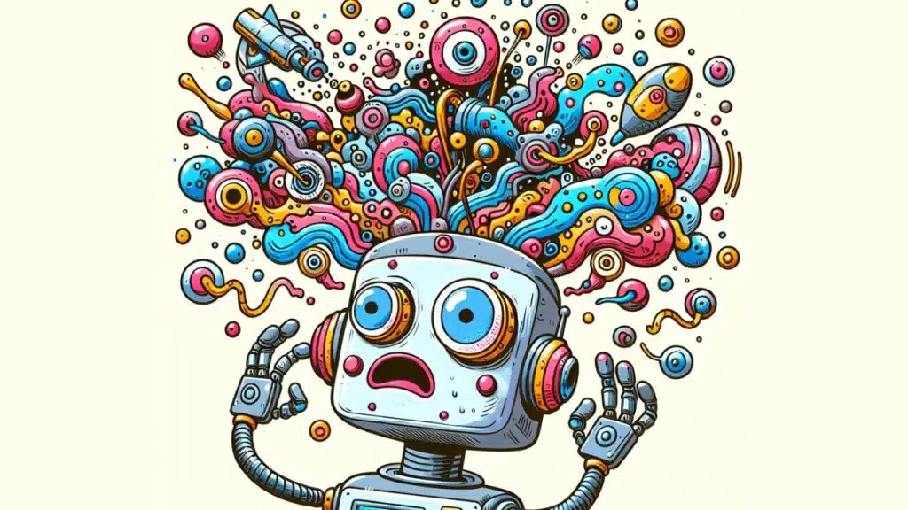

什么是 AI 幻觉?
by @karminski-牙医

(图片来源：team-gpt.com)
AI 幻觉 (AI Hallucination) 是指人工智能模型生成的看似合理但实际上不准确、虚构或与事实不符的内容。
这种现象在生成式 AI 中普遍存在，模型会以高度自信的姿态输出错误信息，以我的经验, 务必对AI生成的任何数值内容保持足够的警惕。
幻觉产生机制
AI 幻觉的核心产生机制包含三个关键环节：
- 模式匹配驱动：基于统计规律而非事实理解生成文本
- 知识边界模糊：无法区分训练数据中的事实与虚构内容
- 置信度错位：流畅的表达形式与内容准确性脱钩
这种机制导致模型可能将不同领域的知识片段进行不合理组合。
主要表现形式
- 事实扭曲：篡改真实事件的时间、地点等关键要素
- 学术造假：虚构不存在的论文、实验数据和学术概念
- 逻辑断裂：在连续对话中出现自相矛盾的陈述
- 过度泛化：将特定场景的规律错误推广到其他领域
技术局限性
- 数据依赖困境：输出质量受限于训练数据的时效性和完整性
- 概率生成本质：优先选择统计上合理而非事实正确的表达
- 验证机制缺失：缺乏实时的事实核查和逻辑自检能力
- 上下文敏感度：长对话中错误信息可能被反复强化
缓解方案
- 混合架构：结合检索增强（RAG）与生成模型
- 置信度校准：输出时附带准确性概率评估
- 溯源机制：标注生成内容的参考来源(如:Google Gemini能标注生成内容来源和对生成内容进行来源审查)
- 动态修正：建立实时反馈的错误修正回路